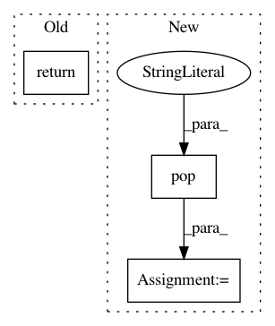

9a4b3473f6ae6eadc29d2427fec7a31dfd56c5a5,nilmtk/elecmeter.py,ElecMeter,power_series,#ElecMeter#,190
Before Change
best_ac_type = select_best_ac_type(self.available_ac_types(),
measurement_ac_type_prefs)
return self.store.load(key=self.key, cols=[best_ac_type], **load_kwargs)
def voltage_series(self):
Returns a generator of pd.Series of voltage, if available.
raise NotImplementedError
After Change
nominal_voltage : float
measurement_ac_type_prefs = kwargs.pop("measurement_ac_type_prefs", None)
preprocessing = kwargs.pop("preprocessing", [])
// Select power column:
if not kwargs.has_key("cols"):
best_ac_type = select_best_ac_type(self.available_power_ac_types(),
measurement_ac_type_prefs)
kwargs["cols"] = [("power", best_ac_type)]
// Get source node
generator = self.store.load(key=self.key, **kwargs)
last_node = Node(self, generator=generator)
// Connect together all preprocessing nodes
for node in preprocessing:
node.upstream = last_node
last_node = node
generator = last_node.process()
// Pull data through preprocessing pipeline
for chunk in generator:
yield chunk
def voltage_series(self):
Returns a generator of pd.Series of voltage, if available.
raise NotImplementedError
In pattern: SUPERPATTERN
Frequency: 3
Non-data size: 3
Instances
Project Name: nilmtk/nilmtk
Commit Name: 9a4b3473f6ae6eadc29d2427fec7a31dfd56c5a5
Time: 2014-07-03
Author: jack-list@xlk.org.uk
File Name: nilmtk/elecmeter.py
Class Name: ElecMeter
Method Name: power_series
Project Name: cesium-ml/cesium
Commit Name: a48399dd824b40c3ac5b8d8fa838e14cc87e661e
Time: 2017-03-29
Author: brettnaul@gmail.com
File Name: cesium/featurize.py
Class Name:
Method Name: load_featureset
Project Name: dgasmith/opt_einsum
Commit Name: e8d036b00bbdbaabc67eb8fee331fb5807f614a5
Time: 2018-03-22
Author: john.gray.14@ucl.ac.uk
File Name: opt_einsum/contract.py
Class Name: ContractExpression
Method Name: __call__